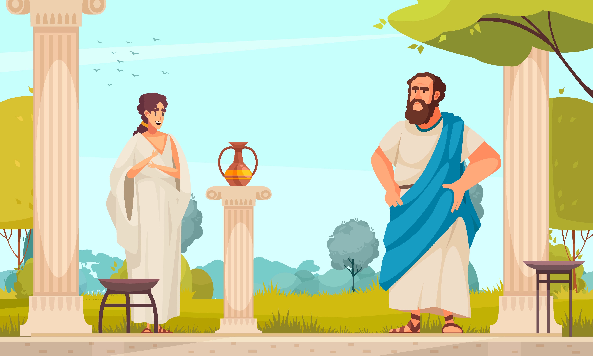
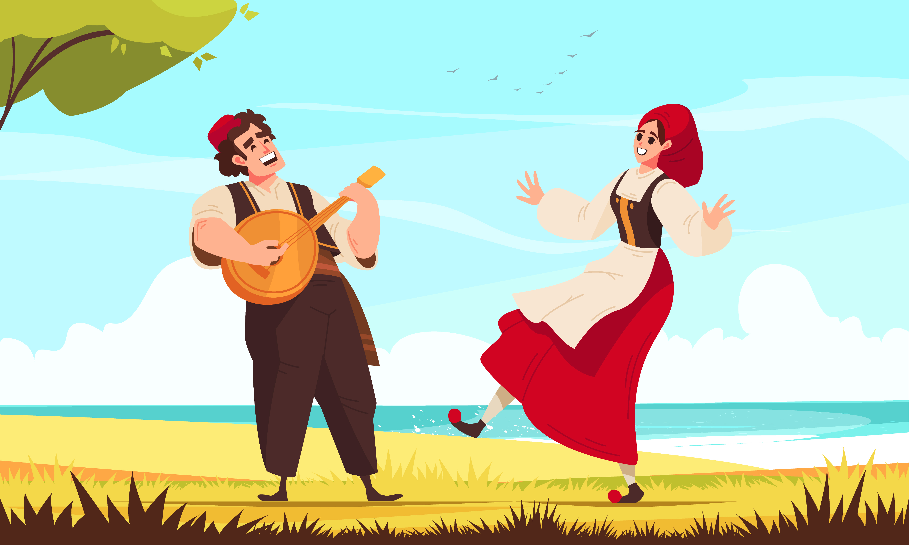
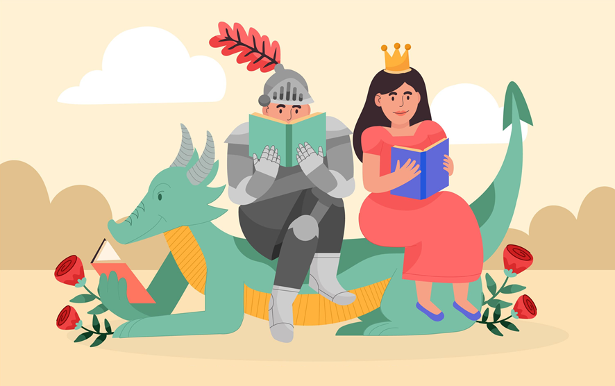
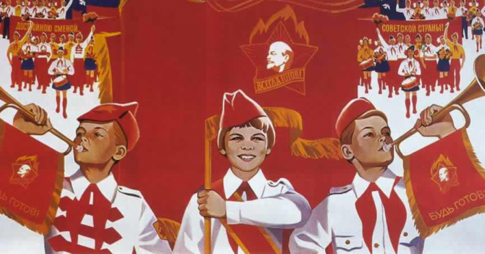

Педагогика - отрасль науки, раскрывающая сущность, роль образовательных процессов в развитии личности, разрабатывающая практические пути и способы повышения их результативности.
Термин «педагогика» появился в Древней Греции. Тогда педагогом был раб, который обязан был присматривать за детьми господина. Намного позже педагогами стали называть людей, которые обучали детей, а также занимались их воспитанием.
В конце XX века образование выдвинулось как ведущая категория для характеристики предмета педагогики. Образование охватывает процессы формирования личностных качеств человека в соответствии со сложившимися в обществе идеалами, традициями и нормами.
Школы не всегда были такими, какими мы знаем их сейчас. Ещё до нашей эры в Египте и Месопотамии открывались учреждения для обучения детей письму.
Во времена античности не было разделения наук, а была единая натурфилософия. Учитель – наставник, помогающий раскрыть навыки и умения ученика. Так было в Греции в IV веке до н.э. Такими были ученые-энциклопедисты Сократ, Демокрит, Платон и Аристотель.

На Руси 988 год считается годом зарождения школьного образования. Князь Владимир Святославович издает указ об обучении детей бояр книжному делу. В образование входили основы чтения и письма, счет и духовно-нравственные ценности, которые передавались через церковно-славянские книги.
Важные преобразования в образование внес чешский педагог Ян Коменский (1592-1670), которые до сих пор актуальны: вместо индивидуального обучения — классы, учебники, приближенные к современному образцу, начало обучения с 6-7 лет и другие. В России до Петра 1 развитие образование шло медленно и было доступно для знатных семей.

Значительные изменения в Российском образовании ввёл Петр 1. Открылись новые школы с углубленным изучением математики, французского языка, истории и географии.
Екатерина II дала право на образование девушкам, открыв Смольный институт. Девушки обучались сначала математике и иностранным языкам, а позже физике, архитектуре, истории и географии. Для юношей императрица увеличила срок обучения и ввела обучение танцам, творчеству и фехтованию.
В XIX веке Александр I создал министерство народного просвещения. Появились училища для бедного населения, где изучали чтение, религию и письменность.

В советской системе образования уклон в школах был на труд. Открылись бесплатные трудовые школы, где обучали письму, чтению и математике. Был введен запрет на религиозные учения, а школа стала двухступенчатой: дети обучались с 8 до 13 лет и с 14 до 17.
В 30 – х годах образование полностью контролировалось государством и утратило ценность личности. Главная цель была воспитать коммунистов. Именно в это время введено обязательное начальное образование.
В 1958 году Верховный Совет СССР ввел реформы образования. Вводилось всеобщее обязательно 8-милетнее образование, а полное образование увеличилось с 10 до 11 классов. Старшеклассники должны были работать на предприятиях или в сельском хозяйстве, так ученики сразу получали свидетельство о специальности.

Сейчас в Российской Федерации общее образование позволяет личности развиваться всесторонне и формировать базовые знания, умения и навыки. Цели и задачи образования определены федеральными государственными образовательными стандартами, но при они предусматривают наличие разных систем образования.
Начальная школа является первым шагом в обучении, где дети получают основные знания и навыки, необходимые для дальнейшего развития. В этом возрасте дети активно учатся читать, писать и решать простые математические задачи. Они также учатся работать в команде, развивать свою социальную и эмоциональную компетенцию.
Начальная школа должна быть доступной и качественной для всех детей.